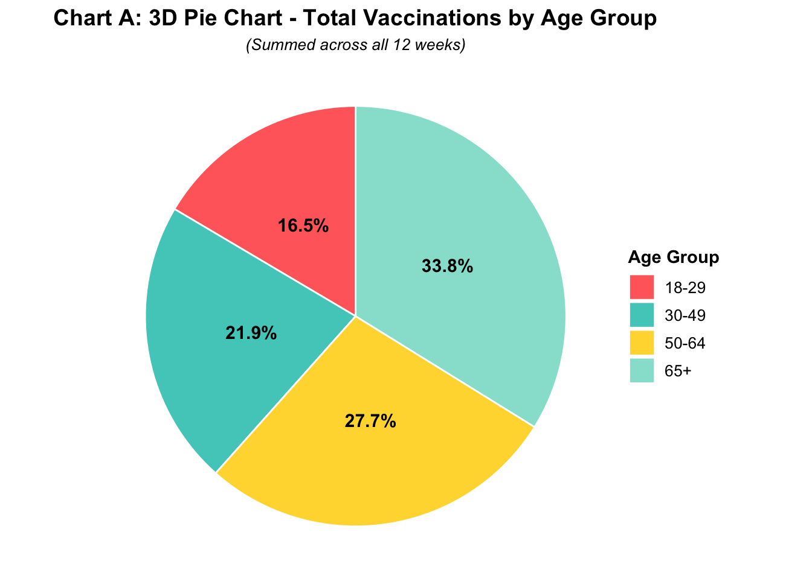
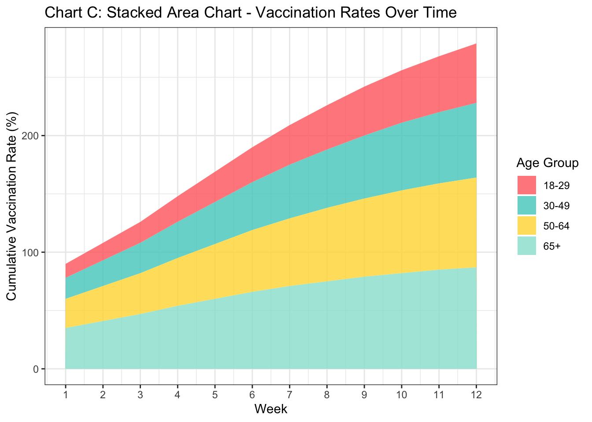

Lab: Creating Good Graphics
1 Graphical Critiques
The following code was generated by Claude AI vers. Sonnet 4.5 (with some modifications).
Code
# Load required libraries
suppressPackageStartupMessages({
library(ggplot2)
theme_set(theme_bw())
library(dplyr)
library(tidyr)
})
# Create sample dataset
set.seed(123)
weeks <- 1:12
age_groups <- c("18-29", "30-49", "50-64", "65+")
# Generate vaccination rate data with realistic patterns
vaccination_data <- data.frame(
week = rep(weeks, each = 4),
age_group = rep(age_groups, times = 12),
vaccination_rate = c(
# Week-by-week data for each age group
12, 18, 25, 35, # Week 1
15, 22, 30, 41, # Week 2
18, 26, 35, 47, # Week 3
22, 31, 41, 54, # Week 4
26, 36, 47, 60, # Week 5
30, 41, 53, 66, # Week 6
34, 46, 58, 71, # Week 7
38, 50, 63, 75, # Week 8
42, 54, 67, 79, # Week 9
45, 58, 71, 82, # Week 10
48, 61, 74, 85, # Week 11
51, 64, 77, 87 # Week 12
)
)
# Set factor levels for consistent ordering
vaccination_data$age_group <- factor(vaccination_data$age_group,
levels = c("18-29", "30-49", "50-64", "65+"))
# Define color palette
age_colors <- c("18-29" = "#FF6B6B",
"30-49" = "#4ECDC4",
"50-64" = "#FFD93D",
"65+" = "#95E1D3")
# CHART A: 3D Pie Chart (showing total vaccinations by age group)
# Calculate total vaccinations per age group (sum across weeks)
total_by_age <- vaccination_data %>%
group_by(age_group) %>%
summarise(total = sum(vaccination_rate))
# Create pie chart with 3D-like appearance using custom positioning
chart_a <- ggplot(total_by_age, aes(x = "", y = total, fill = age_group)) +
geom_bar(stat = "identity", width = 1, color = "white") +
coord_polar("y", start = 0) +
scale_fill_manual(values = age_colors) +
labs(title = "Chart A: 3D Pie Chart - Total Vaccinations by Age Group",
subtitle = "(Summed across all 12 weeks)",
fill = "Age Group") +
theme_void() +
theme(
plot.title = element_text(hjust = 0.5, size = 14, face = "bold"),
plot.subtitle = element_text(hjust = 0.5, size = 10, face = "italic"),
legend.position = "right",
legend.title = element_text(size = 11, face = "bold"),
legend.text = element_text(size = 10)
) +
# Add percentage labels
geom_text(aes(label = paste0(round(total/sum(total)*100, 1), "%")),
position = position_stack(vjust = 0.5),
size = 4, fontface = "bold")
# CHART B: Line Graph - Vaccination Rates Over Time
chart_b <- ggplot(vaccination_data, aes(x = week, y = vaccination_rate,
color = age_group, group = age_group)) +
geom_line(linewidth = 1.2) +
geom_point(size = 2.5) +
scale_color_manual(values = age_colors) +
scale_x_continuous(breaks = 1:12) +
labs(title = "Chart B: Line Graph - Vaccination Rates Over Time",
x = "Week",
y = "Vaccination Rate (%)",
color = "Age Group")
# CHART C: Stacked Area Chart - Vaccination Rates Over Time
chart_c <- ggplot(vaccination_data, aes(x = week, y = vaccination_rate,
fill = age_group)) +
geom_area(alpha = 0.8, position = "stack") +
scale_fill_manual(values = age_colors) +
scale_x_continuous(breaks = 1:12) +
labs(title = "Chart C: Stacked Area Chart - Vaccination Rates Over Time",
x = "Week",
y = "Cumulative Vaccination Rate (%)",
fill = "Age Group")
# CHART D: Grouped Bar Chart - Vaccination Rates by Week and Age Group
chart_d <- ggplot(vaccination_data, aes(x = factor(week), y = vaccination_rate,
fill = age_group)) +
geom_bar(stat = "identity", position = "dodge", width = 0.8) +
scale_fill_manual(values = age_colors) +
labs(title = "Chart D: Grouped Bar Chart - Vaccination Rates by Week and Age Group",
x = "Week",
y = "Vaccination Rate (%)",
fill = "Age Group")
chart_a
chart_b
chart_c
chart_d



- Edit the chunk options above to produce helpful and descriptive captions and alt-text for each chart. Every chart you include in a document should be referenced in the text (preferably using a cross-reference) and should have a helpful caption and include at least short alt-text descriptions using the
fig-altquarto option.
Resources:
- Mastering Alt Text for Images and Charts
- Image Accessibility Generator - This is a great tool but I often have to customize the output. I usually use the long text for image descriptions, which is not best practice but tends to work better than many of the other options available within the quarto ecosystem.
- Using the grammar of graphics, identify the geom, mappings, stat, positions, coordinate systems, and transformations for each graphic. Fill in the table below accordingly, leaving any cells which do not apply to the chart blank. If a mapping is a function of a statistic, fill in the statistic function from ggplot2 and indicate the mapping using the appropriate
after_statvariable.
| Chart | Geom | X mapping | Y mapping | Color mapping | Fill mapping | Stat | Position | Coord System | Transform |
|---|---|---|---|---|---|---|---|---|---|
| A | |||||||||
| B | |||||||||
| C | |||||||||
| D |
Examine each chart and determine whether it effectively communicates changes in vaccine rates over time across different age groups. If the chart is inappropriate for that comparison, explain why; if it is appropriate but not optimal, explain what you would change.
Examine each chart and critique the use of Gestalt principles of grouping. What principles apply? Are they used effectively?
Consider the “messages” you might want viewers to take away from this data and the visuals you generate.
- Brainstorm 2-3 reasonable messages
- What do you think the most important message is from this data set?
- Which comparisons do you want to make easier for participants to perform?
- What obstacles do you expect to encounter designing a chart to facilitate these comparisons?
Considering your answers to the questions above, create your own version of the chart that minimizes cognitive load and maximizes interpretability. Explain the changes that you made and why they improve the chart compared to the ones generated by Claude.
2 Choose Your Own Adventure
Claude used fake data, but we have access to the real deal, and I’ve downloaded a csv to simplify the process.
Of course, the CDC only tracks number of vaccines, not the overall vaccination rate.
Augment this data with census estimates of the population size for each age group. In either case, you may need to do a bit of inference/subtraction to get the counts for the age brackets used by the CDC. Provide reproducible code that generates a population table for 2023 and 2024 with the appropriate counts for each age bracket provided by the CDC.
Options:
- Use the Census QuickFacts page https://www.census.gov/quickfacts/
- Use the nc-est2024-agesex.xlsx population by age and sex file I downloaded from the US Census.
Use the real data to generate the plot you created in 6. How does the real data change the appearance/message of the plot? Does anything get easier or more difficult?
What annotations would you want to add to your chart? You may be able to find relevant information about e.g. approval dates of vaccines at immunize.org’s Vaccine Timeline. Add at least one annotation to your chart, but balance utility with clutter.
How would you modify this chart if your goal was to compare vaccination rates for each age group in 2023 and 2024? Explain your answer, highlighting how your modifications would reduce the cognitive load of making the comparison of interest.
How would you use your statistical training to test and visually highlight any statistically significant differences? Explain. You do not have to actually implement any statistical testing to answer this question.